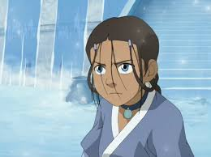
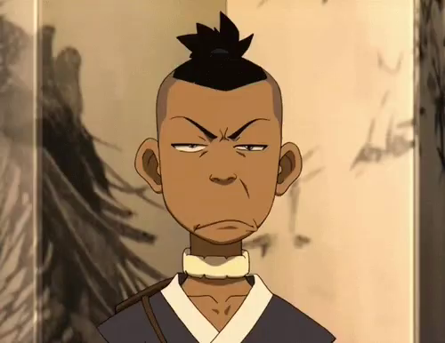
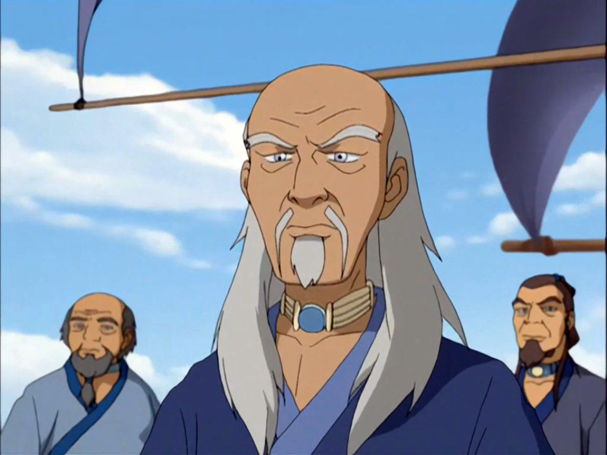

| 1 |

|
Zatara |
Katara es una excelente Maestra del Agua Control, nacida y criada en la Tribu Agua del Sur por su abuela, Kanna, junto a su hermano mayor Sokka, y es la hija del Jefe Hakoda y su esposa Kya. Durante su infancia y adolescencia, Katara
fue una de los dos últimos capaces de realizar el arte de su tribu. Al principio, ella vivió una vida tranquila con su familia, hasta que ella perdió a su madre en un ataque de la Nación del Fuego. Años después de esta tragedia,
cuando era una adolescente, ella y su hermano descubrieron al joven Avatar nacido entre los Nómadas Aire, Aang, quien había sido encerrado dentro de una esfera de hielo durante cien años. Con la necesidad de encontrar un Maestro
del Agua Control, los hermanos y Aang dejaron el Polo Sur, con rumbo a la Tribu Agua del Norte. Katara y Sokka eventualmente se convirtieron en amigos cercanos de Aang, y después de su viaje al Polo Norte, continuaron viajando
con él por todo el mundo mientras él dominaba el resto de elementos, tierra y fuego. La ayuda de los hermanos le permitió a Aang detener la ambición de la Nación del Fuego por dominar el mundo, poniendo fin a la Guerra de los Cien
Años, y finalmente restauraron el equilibrio en el mundo. |
| 2 |

|
Sokka |
Sokka era un guerrero adolescente de la Tribu Agua del Sur que fue criado por su abuela, Kanna. Junto con su hermana menor Katara, Sokka es el hijo de Kya y del Jefe Hakoda, quien se marchó, junto con todos los demás hombres adultos
a su tribu para luchar en la Guerra de los Cien Años contra la Nación del Fuego. Como resultado, Sokka era el hombre de más edad en el Polo Sur. Asumió la responsabilidad de la tribu, hasta que su hermana descubrió a un nómada
aire, llamado Aang, congelado en un bloque de hielo. Cuando se enteró de que Aang era el Avatar, al principio se mostró escéptico de que un niño podría realmente salvar al mundo. Mientras él y su hermana ayudaban a Aang en su búsqueda,
Sokka empezó a creer que realmente Aang era la única esperanza para alcanzar la paz en el mundo. A pesar de su inhabilidad como maestro elemental, Sokka se convirtió en el estratega del grupo, constantemente tratando de probarse
a sí mismo, para ser un gran guerrero como su padre. También se supone que no cree en la magia espiritual, ya que abiertamente se burló de ello. Sus habilidades de liderazgo mejoran a lo largo de la serie, tanto que culminó como
autor intelectual del plan para la Invasión a la Nación del Fuego durante el Día del Sol Negro. Su humor y capacidad de organización y planificación lo convirtió en alguien imprescindible para el grupo, durante sus viajes. Por
la conclusión de la serie, Sokka se convirtió en un maestro de la espada y, finalmente, se convierte en un gran guerrero como su padre. Tuvo grandes apariciones en La Leyenda de Korra, en unos Flashback mostrándose ya adulto y
como presidente del Consejo de la República Unida. |
| 3 |

|
Pakku |
Azula era la Princesa de la Nación del Fuego, hija del Señor del Fuego Ozai y la Princesa Ursa, y la hermana menor de su enemigo, el Señor del Fuego Zuko y medio-hermana de Kiyi. Ella fue un adversario clave del Equipo Avatar, persiguiendo
al Avatar Aang y su hermano desterrado a través del Reino Tierra en compañía de sus dos mejores amigas, Mai y Ty Lee. Una prodigio del Fuego Control, Azula era sádica, manipuladora y obsesionada con el poder. Ella era una estratega
experta que orquestó la victoria de la Nación del Fuego sobre la capital del Reino Tierra, Ba Sing Se, y detuvo la invasión en el Día del Sol Negro. |
| 4 |
|
Yue |
Yue era la hija de dieciséis años del Jefe Arnook de la Tribu Agua del Norte, por ende la princesa tribal de ese lugar. Ella nunca llegó a gobernar la tribu porque se convirtió en el Espíritu de la Luna después de sacrificarse cuando
este fue asesinado durante el Asedio del Norte |